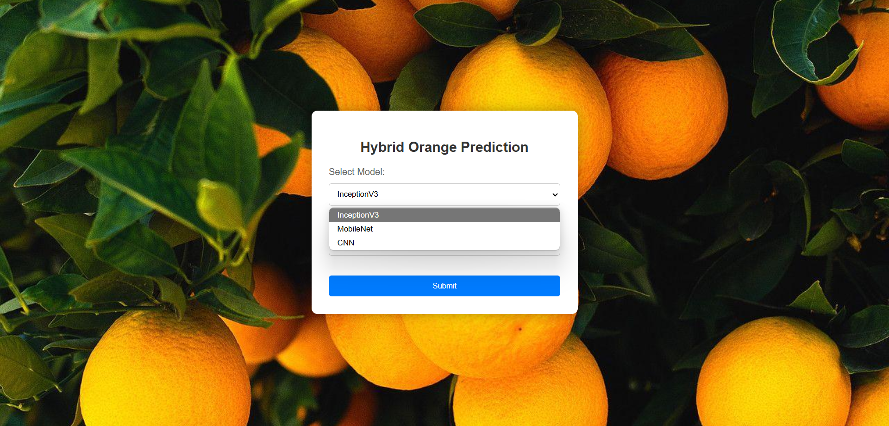

My Projects
Classification Of Hybrid Oranges Using Neural Networks
The Classification of Hybrid Oranges Using Neural Networks focuses on leveraging advanced deep learning techniques to accurately identify and categorize different types of hybrid oranges. By utilizing neural networks, particularly convolutional neural networks (CNNs), this approach ensures high precision in distinguishing subtle differences between varieties based on visual features. This classification can enhance quality control, optimize inventory management, and improve overall fruit grading processes in the agriculture industry.
Face Detection-Based Attendance System Using Deep Learning
The Face Detection-Based Attendance System Using Deep Learning utilizes advanced facial recognition techniques to automate and streamline attendance tracking. By employing deep learning models, particularly convolutional neural networks (CNNs), the system can accurately detect and identify faces in real-time, ensuring a more efficient, secure, and tamper-proof method of recording attendance. This technology eliminates the need for manual processes, reducing errors and increasing convenience in environments like schools, offices, and organizations.
Multiclass Fruit Classification Using Deep Learning models
The Multiclass Fruit Classification Using Deep Learning Techniques aims to classify various types of fruits by leveraging the power of deep learning models. Using convolutional neural networks (CNNs), the system can automatically learn and distinguish between different fruit categories based on features like shape, color, and texture. This approach ensures high accuracy and efficiency, making it ideal for applications in agriculture, retail, and food processing, where precise identification of multiple fruit types is crucial for inventory management, quality control, and automation.

Classification of different types of banana using deep learning models
Leveraging advanced deep learning techniques, this project focuses on accurately classifying various banana types to enhance agricultural practices and optimize supply chain management. Utilizing a custom dataset of over 5,000 images, I explored multiple architectures to achieve high classification accuracy and insights into fruit quality.
Classification of different types of banana using deep learning models
Leveraging advanced deep learning techniques, this project focuses on accurately classifying various banana types to enhance agricultural practices and optimize supply chain management. Utilizing a custom dataset of over 5,000 images, I explored multiple architectures to achieve high classification accuracy and insights into fruit quality.